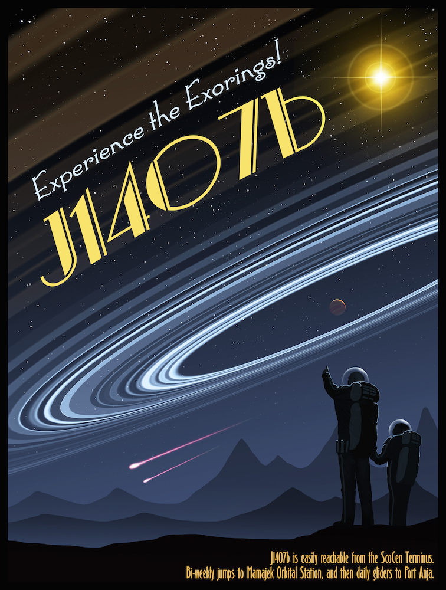

Exorings
Searching for ring systems in transit.

Planets condense from giant disks of gas and dust orbiting their parent star, and in the process, they form smaller circumplanetary disks of material themselves. There is a brief period of time when moons start to form in this circumplanetary disk, carving out ring-like gaps. These huge structures can be seen casting shadows across the Galaxy, and we are beginning to detect these systems. We are now searching for a system that has eclipsed two or more times before, so that we can plan detailed observations during the next eclipse.
Our initial discovery was the giant ring system seen towards the young star J1407, and we built a dedicated observatory called bRing to look for circumplanetary material towards the young exoplanet Beta Pictoris b. My graduate student Dirk van Dam is searching archival data looking for the tell-tale signatures of more transiting ring systems.
The bRing Project
Looking at one star continuously for over one year
In 2017 and the start of 2018, the circumplanetary environment of the gas giant exoplanet Beta Pictoris b crossed in front of the bright young star Beta Pictoris, a naked eye 4th magnitude star in the Southern skies. We wanted to see if any circumplanetary material crossed in front of the star over this 300 day period, and so I started the bRing project.
The
The J1407 eclipse
There are five papers on the J1407b system:
- Paper I - Mamajek, Pecault, Quillen et al. (2012) The discovery of the eclipses.
- Paper II - van Werkhoven, Kenworthy and Mamajek (2014) Improving the photometry of the eclipse
- Paper III - Kenworthy et al. (2015) The search for the companion J1407b
- Paper IV - Kenworthy and Mamajek (2015) Modeling the giant exorings around J1407b
- Paper V - Rieder and Kenworthy (2016) Constraints on the size and dynamics of the J1407b ring system
New York Times front page with the results from Rieder and Kenworthy competing with some bloke who won a Nobel Prize. (2016 October 13).
The computer code used in Paper IV for this model is at on GitHub in the exorings repo.
Exoring model for J1407b from Matthew Kenworthy on Vimeo and download the J1407b ring animation
Travel poster for J1407 by Mark Garlick. You can buy the poster here.
J1407 is a 0.9 Solar mass, 16 million year old star that is part of the Sco-Cen OB Association. Due to its youth, it is slightly hotter and brighter than you would expect for a nearly Solar mass star - it will eventually settle down onto the Main Sequence near the Sun's present position.
The star is about 133 parsecs away in the Southern hemisphere, and is a 12th magnitude star. Most of the time, it has an almost constant brightness. There is a small (4%) variation in its brightness every 3.2 days, almost certainly due to star spots on its surface rotating in and out of our view.
Other than its young age, there's nothing particularly distinctive about it - which was all the more surprising when in 2007 there was the eclipse.
In April and May 2007, this star started dimming irregularly over a two month period, with sudden and dramatic changes in its brightness happening over a few hours. At the midpoint of these two months, the star faded by over a factor of 20 in brightness before gradually coming back to full brightness a month later.
In 2010, Eric Mamajek and Mark Pecaut discovered this star and its unusual behaviour whilst looking for new members of the Sco Cen OB Association. They used an exoplanet detection camera array called SuperWASP, which has been taking data for the past eight years. The SuperWASP team released over 18 million light curves of stars into a public searchable database, and Mamajek and Pecaut had used this to look for evidence of star spots on their candidate stars.
The most likely explanation of the light curve is that there is an unseen low mass companion orbiting around the star J1407 (which we call J1407b) and that this companion has a giant ring system orbiting around it. This ring system is far bigger than the rings orbiting around Saturn, and these rings passed in front of the star just like the Moon moving in front of our Sun during a solar eclipse. We can calculate how large the ring system is from the shape and duration of the light curve seen in 2007.
We made a model of the giant ring system which is consistent with the May 2007 light curve. The ring system is about 1.2 AU in diameter - if these rings were put around Saturn, they would be about 14 times the diameter of the full Moon. We would probably see them during the day from Earth. There are many rings in the model, which implies that there are moons forming around J1407b. This must have happened in our Solar system for the gas giants too. One gap we see in the ring model can be explained with a moon that is no more than 2 Earth masses, and its orbital period around J1407b is about 2 years.
Last updated around mid-June 2019.